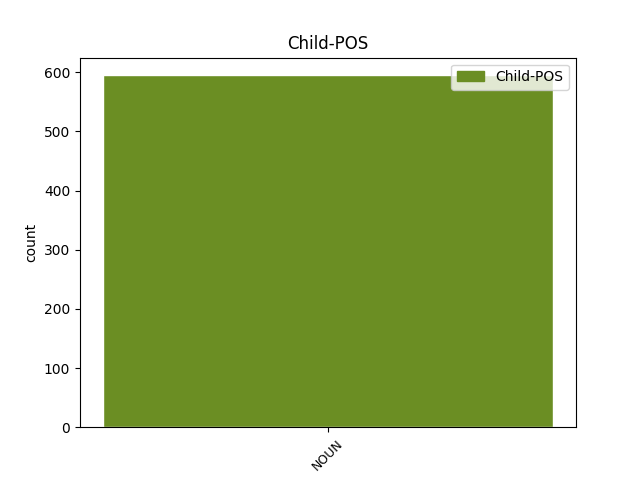

Distribution of features within this leaf


Agreement Rules sorted by frequency.
- When the dependent token is the subject(subj) of the head token, and the head token is VERB and the dependent token is NOUN.
1 Turklāt _ _ _ _ 0 _ _ _
2 , _ _ _ _ 0 _ _ _
3 ierādāms ierādīt VERB vmnpdmsnppnpn Case=Nom|Definite=Ind|Degree=Pos|Gender=Masc|Number=Sing|Polarity=Pos|Tense=Pres|VerbForm=Part|Voice=Pass 0 _ _ _
4 darbs darbs NOUN ncmsn1 Case=Nom|Gender=Masc|Number=Sing 3 subj _ LvtbNodeId=a-z90-p175s2w4|SpaceAfter=No
5 , _ _ _ _ 0 _ _ _
6 kas _ _ _ _ 0 _ _ _
7 atbilst _ _ _ _ 0 _ _ _
8 prasmēm _ _ _ _ 0 _ _ _
9 un _ _ _ _ 0 _ _ _
10 spējām _ _ _ _ 0 _ _ _
11 . _ _ _ _ 0 _ _ _
1 Ūdensaugu _ _ _ _ 0 _ _ _
2 attīstībai _ _ _ _ 0 _ _ _
3 nepieciešamas nepieciešams ADJ affpnnp Case=Nom|Definite=Ind|Degree=Pos|Gender=Fem|Number=Plur 0 _ _ _
4 dažādas _ _ _ _ 0 _ _ _
5 ķīmisko _ _ _ _ 0 _ _ _
6 elementu _ _ _ _ 0 _ _ _
7 formas forma NOUN ncfpn4 Case=Nom|Gender=Fem|Number=Plur 3 subj _ LvtbNodeId=a-z85-p63s1w7
8 – _ _ _ _ 0 _ _ _
9 neorganiskais _ _ _ _ 0 _ _ _
10 ogleklis _ _ _ _ 0 _ _ _
11 , _ _ _ _ 0 _ _ _
12 nitrāti _ _ _ _ 0 _ _ _
13 , _ _ _ _ 0 _ _ _
14 fosfāti _ _ _ _ 0 _ _ _
15 un _ _ _ _ 0 _ _ _
16 kālijs _ _ _ _ 0 _ _ _
17 kopā _ _ _ _ 0 _ _ _
18 ar _ _ _ _ 0 _ _ _
19 citiem _ _ _ _ 0 _ _ _
20 ķīmiskajiem _ _ _ _ 0 _ _ _
21 savienojumiem _ _ _ _ 0 _ _ _
22 , _ _ _ _ 0 _ _ _
23 ko _ _ _ _ 0 _ _ _
24 tie _ _ _ _ 0 _ _ _
25 uzņem _ _ _ _ 0 _ _ _
26 gan _ _ _ _ 0 _ _ _
27 no _ _ _ _ 0 _ _ _
28 ūdens _ _ _ _ 0 _ _ _
29 , _ _ _ _ 0 _ _ _
30 gan _ _ _ _ 0 _ _ _
31 no _ _ _ _ 0 _ _ _
32 sedimentiem _ _ _ _ 0 _ _ _
33 ( _ _ _ _ 0 _ _ _
34 Barko _ _ _ _ 0 _ _ _
35 & _ _ _ _ 0 _ _ _
36 Smart _ _ _ _ 0 _ _ _
37 , _ _ _ _ 0 _ _ _
38 1981 _ _ _ _ 0 _ _ _
39 ; _ _ _ _ 0 _ _ _
40 Thiébaut _ _ _ _ 0 _ _ _
41 & _ _ _ _ 0 _ _ _
42 Muller _ _ _ _ 0 _ _ _
43 , _ _ _ _ 0 _ _ _
44 2003 _ _ _ _ 0 _ _ _
45 ) _ _ _ _ 0 _ _ _
46 . _ _ _ _ 0 _ _ _
1 Respondentu _ _ _ _ 0 _ _ _
2 sniegtajos _ _ _ _ 0 _ _ _
3 nacistiskās _ _ _ _ 0 _ _ _
4 Vācijas _ _ _ _ 0 _ _ _
5 armijas _ _ _ _ 0 _ _ _
6 karavīru _ _ _ _ 0 _ _ _
7 vērtējumos _ _ _ _ 0 _ _ _
8 būtiska _ _ _ _ 0 _ _ _
9 bijusi būt AUX vcnpdfsnasnpn Aspect=Perf|Case=Nom|Definite=Ind|Degree=Pos|Gender=Fem|Number=Sing|Polarity=Pos|Tense=Past|VerbForm=Part|Voice=Act 0 _ _ _
10 pašu _ _ _ _ 0 _ _ _
11 saskarsmes _ _ _ _ 0 _ _ _
12 pieredze pieredze NOUN ncfsn5 Case=Nom|Gender=Fem|Number=Sing 9 subj _ LvtbNodeId=a-z89-p214s1w12|SpaceAfter=No
13 . _ _ _ _ 0 _ _ _
1 Nu _ _ _ _ 0 _ _ _
2 , _ _ _ _ 0 _ _ _
3 bankas _ _ _ _ 0 _ _ _
4 pašu _ _ _ _ 0 _ _ _
5 kapitāls kapitāls NOUN ncmsn1 Case=Nom|Gender=Masc|Number=Sing 7 subj _ LvtbNodeId=a-s80-p3s2w5
6 150 _ _ _ _ 0 _ _ _
7 miljoni miljons NOUN ncmpn1 Case=Nom|Gender=Masc|Number=Plur 0 _ _ _
8 . _ _ _ _ 0 _ _ _
1 Ja _ _ _ _ 0 _ _ _
2 jau _ _ _ _ 0 _ _ _
3 viņi _ _ _ _ 0 _ _ _
4 atļaujas _ _ _ _ 0 _ _ _
5 ar _ _ _ _ 0 _ _ _
6 krievvalodīgo _ _ _ _ 0 _ _ _
7 masu _ _ _ _ 0 _ _ _
8 mediju _ _ _ _ 0 _ _ _
9 žurnālistiem _ _ _ _ 0 _ _ _
10 runāt _ _ _ _ 0 _ _ _
11 krieviski _ _ _ _ 0 _ _ _
12 , _ _ _ _ 0 _ _ _
13 tad _ _ _ _ 0 _ _ _
14 kāda kāda PRON pi0fsnn Case=Nom|Gender=Fem|Number=Sing|PronType=Ind 0 _ _ _
15 jēga jēga NOUN ncfsn4 Case=Nom|Gender=Fem|Number=Sing 14 subj _ LvtbNodeId=a-p423-p4s7w15
16 viņus _ _ _ _ 0 _ _ _
17 vairs _ _ _ _ 0 _ _ _
18 audzināt _ _ _ _ 0 _ _ _
19 ! _ _ _ _ 0 _ _ _
1 Ziemas _ _ _ _ 0 _ _ _
2 vakars _ _ _ _ 0 _ _ _
3 , _ _ _ _ 0 _ _ _
4 pulkstenis pulkstenis NOUN ncmsn2 Case=Nom|Gender=Masc|Number=Sing 5 subj _ LvtbNodeId=a-d198-p14s1w4
5 pusseptiņi pusseptiņi NUM mccmpn Case=Nom|Gender=Masc|Number=Plur|NumType=Card 0 _ _ _
6 . _ _ _ _ 0 _ _ _
Disagree Examples:
1 Grafiskajos _ _ _ _ 0 _ _ _
2 failos _ _ _ _ 0 _ _ _
3 , _ _ _ _ 0 _ _ _
4 kuros _ _ _ _ 0 _ _ _
5 izmanto _ _ _ _ 0 _ _ _
6 RGB _ _ _ _ 0 _ _ _
7 krāsu _ _ _ _ 0 _ _ _
8 attēlošanas _ _ _ _ 0 _ _ _
9 shēmu _ _ _ _ 0 _ _ _
10 , _ _ _ _ 0 _ _ _
11 katras _ _ _ _ 0 _ _ _
12 krāsas _ _ _ _ 0 _ _ _
13 trīs _ _ _ _ 0 _ _ _
14 komponentus _ _ _ _ 0 _ _ _
15 - _ _ _ _ 0 _ _ _
16 zaļo _ _ _ _ 0 _ _ _
17 , _ _ _ _ 0 _ _ _
18 sarkano _ _ _ _ 0 _ _ _
19 un _ _ _ _ 0 _ _ _
20 zilo _ _ _ _ 0 _ _ _
21 – _ _ _ _ 0 _ _ _
22 kodē _ _ _ _ 0 _ _ _
23 ar _ _ _ _ 0 _ _ _
24 8 _ _ _ _ 0 _ _ _
25 bitiem _ _ _ _ 0 _ _ _
26 ( _ _ _ _ 0 _ _ _
27 bits bits NOUN ncmsn1 Case=Nom|Gender=Masc|Number=Sing 30 subj _ LvtbNodeId=a-c21-p20s2w27
28 - _ _ _ _ 0 _ _ _
29 informācijas _ _ _ _ 0 _ _ _
30 vienība vienība NOUN ncfsn4 Case=Nom|Gender=Fem|Number=Sing 0 _ _ _
31 , _ _ _ _ 0 _ _ _
32 kuras _ _ _ _ 0 _ _ _
33 vērtība _ _ _ _ 0 _ _ _
34 ir _ _ _ _ 0 _ _ _
35 0 _ _ _ _ 0 _ _ _
36 vai _ _ _ _ 0 _ _ _
37 1 _ _ _ _ 0 _ _ _
38 ) _ _ _ _ 0 _ _ _
39 . _ _ _ _ 0 _ _ _
1 Pēc _ _ _ _ 0 _ _ _
2 tam _ _ _ _ 0 _ _ _
3 ieteicama _ _ _ _ 0 _ _ _
4 parafīna _ _ _ _ 0 _ _ _
5 vanna _ _ _ _ 0 _ _ _
6 ( _ _ _ _ 0 _ _ _
7 minimums minimums NOUN ncmsn1 Case=Nom|Gender=Masc|Number=Sing 12 subj _ LvtbNodeId=a-c60-p4s6w7
8 – _ _ _ _ 0 _ _ _
9 sešas _ _ _ _ 0 _ _ _
10 līdz _ _ _ _ 0 _ _ _
11 desmit _ _ _ _ 0 _ _ _
12 reizes reize NOUN ncfpn5 Case=Nom|Gender=Fem|Number=Plur 0 _ _ _
13 ) _ _ _ _ 0 _ _ _
14 , _ _ _ _ 0 _ _ _
15 kas _ _ _ _ 0 _ _ _
16 jāveic _ _ _ _ 0 _ _ _
17 divas _ _ _ _ 0 _ _ _
18 reizes _ _ _ _ 0 _ _ _
19 nedēļā _ _ _ _ 0 _ _ _
20 . _ _ _ _ 0 _ _ _
1 spožā _ _ _ _ 0 _ _ _
2 gaisma gaisma NOUN ncfsn4 Case=Nom|Gender=Fem|Number=Sing 4 subj _ LvtbNodeId=a-d198-p24s1w2
3 kā _ _ _ _ 0 _ _ _
4 lietuvēns lietuvēns NOUN ncmsn1 Case=Nom|Gender=Masc|Number=Sing 0 _ _ _
5 , _ _ _ _ 0 _ _ _
6 nav _ _ _ _ 0 _ _ _
7 elpas _ _ _ _ 0 _ _ _
8 , _ _ _ _ 0 _ _ _
9 plaušu _ _ _ _ 0 _ _ _
10 nav _ _ _ _ 0 _ _ _
11 , _ _ _ _ 0 _ _ _
12 balss _ _ _ _ 0 _ _ _
13 nav _ _ _ _ 0 _ _ _
14 , _ _ _ _ 0 _ _ _
1 Irmgardes _ _ _ _ 0 _ _ _
2 maciņā _ _ _ _ 0 _ _ _
3 palicis palikt VERB vmnpdmsnasnpn Aspect=Perf|Case=Nom|Definite=Ind|Degree=Pos|Gender=Masc|Number=Sing|Polarity=Pos|Tense=Past|VerbForm=Part|Voice=Act 0 _ _ _
4 pavisam _ _ _ _ 0 _ _ _
5 maz _ _ _ _ 0 _ _ _
6 naudas nauda NOUN ncfsg4 Case=Gen|Gender=Fem|Number=Sing 3 subj _ LvtbNodeId=a-d8-p58s2w6|SpaceAfter=No
7 . _ _ _ _ 0 _ _ _
1 Limbažu _ _ _ _ 0 _ _ _
2 novada _ _ _ _ 0 _ _ _
3 pašvaldības _ _ _ _ 0 _ _ _
4 ēkas _ _ _ _ 0 _ _ _
5 1. _ _ _ _ 0 _ _ _
6 stāvā _ _ _ _ 0 _ _ _
7 šobrīd _ _ _ _ 0 _ _ _
8 skatāma skatīt VERB vmnpdfsnppnpn Case=Nom|Definite=Ind|Degree=Pos|Gender=Fem|Number=Sing|Polarity=Pos|Tense=Pres|VerbForm=Part|Voice=Pass 0 _ _ _
9 izstāde _ _ _ _ 0 _ _ _
10 par _ _ _ _ 0 _ _ _
11 Soču _ _ _ _ 0 _ _ _
12 Olimpiskajām _ _ _ _ 0 _ _ _
13 spēlēm _ _ _ _ 0 _ _ _
14 Vareni _ _ _ _ 0 _ _ _
15 spēki spēks NOUN ncmpn1 Case=Nom|Gender=Masc|Number=Plur 8 subj _ LvtbNodeId=a-p11216-p1s1w15
16 no _ _ _ _ 0 _ _ _
17 Latvijas _ _ _ _ 0 _ _ _
18 . _ _ _ _ 0 _ _ _